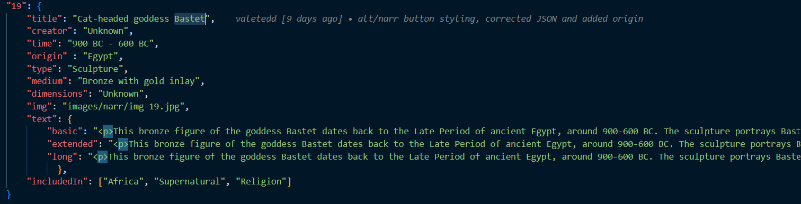

1. General Introduction About Project
1.1 The idea
Welcome to our project for the Information Modelling and Web Technologies course. This project embarks on a fascinating journey into cats, presenting a collection of different items about it.
1.2 List of Items
| Title |
Type |
| 1. Mantle |
Textile |
| 2. Cat from a Ball Toss Game |
Folk Art (Sculpture) |
| 3. Amulet depicting a cat |
Amulet |
| 4. Nightlight in the form of a cat |
Figure (Nightlight) |
| 5. Tournée du Chat Noir avec Rodolphe Salis |
Poster |
| 6. Shashthi |
Painting |
| 7. The Cat |
Religious Card |
| 8.Bestiary |
Manuscript |
| 9. The Black Cat |
Illustration |
| 10. Cat with a quail |
Mosaic |
| 11. Nekomata |
Woodblock Print |
| 12. Cats Enjoying the Evening Cool |
Hanging Scroll |
| 13. Study for the Madonna of the Cat |
Drawing |
| 14. Collection of Russian Lubki |
Printmaking (Lubki) |
| 15. Sarcophagus of Prince Thutmose's Cat |
Sarcophagus |
| 16. Fighting cat-like figuresrt |
Carving |
| 17. 25 Cats Named Sam and One Blue Pussy |
Artist's Book |
| 18. Black Cat Auditions in Hollywood |
Photograph |
| 19. Figure of Bastet |
Sculpture |
1.3 Narratives and Sub-Narratives
The selection of these narratives—Geography, Daily Life, and Supernatural—is rooted in their ability to provide a holistic and comprehensive exploration of cats. Each narrative framework was chosen to highlight distinct aspects of the cat-human relationship. These narratives were chosen to offer a well-rounded exploration of cats, balancing the everyday with the extraordinary, the global with the personal, and the historical with the mystical.
- Geography: Explores the cultural significance of cats in Europe, Asia, America, and Africa, showcasing their global impact and diverse representations.
- Daily: Highlights the roles of cats in everyday activities through categories like Chilling Cats, Playing Cats, and Hunting Cats, illustrating their companionship and utility.
- Supernatural: Examines the mystical and symbolic aspects of cats in Folklore, Superstition, and Religion, uncovering their spiritual and mythical roles across cultures.
1.4 Objectives
- Educational Engagement: Provide detailed information and context about each item in the collection, educating visitors on the symbolism, historical context, and cultural relevance of cats in societies from ancient Egypt to modern times.
- Cultural Exploration: Present a wide array of artifacts, artworks, and objects to illustrate the cultural significance of cats across different periods and regions, showcasing how these animals have influenced human history, art, and beliefs.
- Interactive Storytelling: Create an engaging experience where visitors can navigate through various narratives—geography, daily life, and the supernatural—allowing them to explore the multifaceted relationships between cats and humans.
2 Idea Development
2.1 Brainstorming Categories
- Organization of Ideas: We utilized mind maps to visually connect and explore the various themes related to cats, enabling us to see relationships and identify key concepts.
- Case Study: By analyzing previous exhibitions, we drew inspiration from different approaches and practices.
- Visual Experimentation: We developed prototypes to test different layouts and visual representations, ensuring that our design effectively communicates our themes.
- Interface Design: We focused on creating a seamless experience across both desktop and mobile applications, tailoring our interface to meet the needs of diverse users.
- User Experience Enhancement: Our aim was to create an intuitive and engaging experience, prioritizing user interaction and satisfaction throughout the exhibition.
2.2 Techniques for Ideation in Design
In our design process, we utilized Mind Mapping as a key ideation technique. This visual tool allowed us to brainstorm and organize ideas around the central theme of the cultural impact of cats. Starting with a core concept, we branched out into related themes, such as mythology, daily life, and artistic representation. This approach fostered creativity and collaboration, enabling team members to contribute unique perspectives and discover unexpected connections. Overall, mind mapping was essential in developing a rich narrative for our exhibition, effectively showcasing the diverse roles of cats throughout history.
2.3 Primary Goals and Selection of Project Topic
When distributing responsibilities within our team, we adhered to a core principle: we divided the work by functionality instead of by techniques. This strategy was vital to us, as it guaranteed that each team member was engaged in various aspects of the application's development, thus broadening their technical expertise.
2.4 Popularity of the Animal as a Topic
These beloved pets are cherished globally, captivating us with their diversity, endearing behaviors, and the emotional bonds many people form with them. Additionally, cats are steeped in cultural symbolism, having held significant roles in various civilizations, from revered deities to icons of mystery and independence. Their widespread popularity on social media and in contemporary culture further illustrates their ability to capture the attention and affection of people around the world. By exploring their multifaceted roles across different societies, we can gain a deeper understanding of our connection to these enigmatic creatures.
2.5 Assigning Responsibilities
By allocating responsibilities according to entire pages rather than individual tasks, we ensured that every team member was comprehensively involved in the project.
- Chiara Martina: Responsible for the main page and the timeline page.
- Elvira Kushlak: Responsible for the map page.
- Valentino Castagna: Responsible for the gallery page.
- Zizhe Lin: Responsible for collection and narrative page.
- Team Group: We collectively make decisions regarding the style, including the colors, fonts, and choices about the design of the pages.
3 Narrative and Sub-Narrative Structure
3.1 Storytelling Approach
The storytelling approach of the exhibition aims to guide the visitors through an experience, blending art, history, and culture with the fascination of cats. Through different media like sculptures, paintings, artifacts, and digital works, the narrative builds a multidimensional understanding of how cats have influenced human lives across eras. We want visitors to experience a sense of wonder and curiosity about cats, stimulating in them a deeper appreciation for these fascinating creatures. The narrative is designed to elicit emotional responses, making the experience of exposure memorable and engaging.
3.2 Content Organization and User Pathways
Visitors can traverse the exhibition via multiple pathways, providing diverse routes and viewpoints for engaging with the content:
- Home
- Map: This section provides an overview of the museum's map, allowing users to easily locate the positions of the artifacts on display.
- Exhibition:
- Narratives: The main narrative paths include Narratives and Subnarratives:
- Geography: This theme reveals the cultural impact of cats in different parts of the world, subdivided into regions including Europe, Asia, the Americas, and Africa. Each region highlights unique representations of cats and their distinctive roles within local cultures.
- Europe: Showcases the symbolic significance of cats in Europe, where they have often taken on roles tied to myths and legends.
- Asia: Highlights the spiritual significance of cats in Asia, where they are often seen as mystical beings.
- Americas: Represents the role of cats in contemporary cultures in the Americas.
- Africa: Focuses on the importance of cats in ancient Egypt and other African cultures, where they have played religious and ritualistic roles.
- Daily: This pathway explores the role of cats in everyday life, highlighting their various activities and interactions with humans.
- Chilling Cats: Represent the relaxed nature of cats as calm and steady companions.
- Playing Cats: Celebrate the playful, social moments of cats, reflecting their curious and lively nature.
- Hunting Cats: Emphasize the predatory side of cats and their role as hunters within human environments.
- Supernatural: A fascinating pathway that delves into the mystical and symbolic aspects of cats.
- Folklore: Shares popular stories and legends where cats are central figures associated with mystery and magic.
- Superstition: Explores superstitions surrounding cats, such as symbols of bad or good luck.
- Religion: Examines the role of cats in religious contexts, including ancient Egypt and other spiritual traditions, where they are often seen as divine and protective figures.
- Collections: This section includes all the images of the artifacts showcased in our exhibition.
- Gallery: View an array of visual representations, including paintings, sculptures, and photographs present in the exhibition.
- Timeline: Presents a chronological overview of key dates, each corresponding to specific items in the exhibition.
- About Us: Present the team members of this project.
4. Design Specifications
4.1 General Visual Design Choices
4.1.1 Color Scheme
The project adopts a warm, inviting color palette to harmonize with the theme of artistic and cultural exploration:
- Palette: Soft Peach (#E4A88C), Burnt Orange (#C96638), Deep Red (#6B1A10), and Light Beige (#FAF3EF).
- Rationale: Colors were selected to create a cohesive and inviting environment. Background colors are subdued to allow the content to take focus, while accent colors emphasize interactive elements and guide user actions.
- Usage: Backgrounds are mainly light beige, supporting readability. Text uses dark colors for high contrast, and interactive elements like buttons and links are highlighted with deeper tones to signal actions.
4.1.2 Typography
Typography choices prioritize clarity and aesthetic alignment with the project’s theme:
- Fonts: 'Nunito' is used for body text due to its clean and readable style, while 'Comfortaa' is used for headers, adding a modern and welcoming tone.
- Hierarchy and consistency: A clear typographic hierarchy (bold for headings, regular weight for body text) is maintained throughout, providing structure and consistency. Font sizes are adjusted responsively to ensure readability across devices.
4.1.3 Layout and Grid System
The layout leverages a flexible, responsive grid to ensure accessibility and ease of navigation:
- Grid structure: CSS Grid and Flexbox are used to adapt the layout dynamically, with multiple columns on larger screens and single columns on mobile for streamlined viewing.
- Page structure: A consistent navigation bar and footer across all pages maintain user familiarity. Content blocks are designed to maintain spacing and alignment, preventing clutter and enhancing readability.
4.1.4 Iconography and Imagery
The project minimizes icon usage to keep focus on the artwork while supporting key navigational functions:
- Icons: Simple icons are used sparingly for essential actions, such as navigation and social media links, maintaining a minimalist look.
- Images: Artwork images are displayed in high resolution and dynamically scaled to fit within the responsive grid. Hover effects reveal supplementary information, ensuring an engaging and informative visual experience.
4.2 Individual Page Design Specifications
4.2.1 Homepage
Overview
The homepage introduces visitors to the exhibition "Cats, Art, Traditions" and its location at the Museo Civico Archeologico in Bologna. Provides information about the event, highlights the main aspects of the exhibition and encourages users to explore further.
Visual Design
The visual design of the homepage is organized by sections, each with a background inspired by the color palette selected to maintain consistency. The main colours include warm tones and have been used to differentiate thematic areas.
- Color Scheme:
Red (rgb(107, 26, 16)) is used for the "About Exhibition" section to draw attention and invite the user to know the essence and soul of the exhibition.
Purple (rgb(103, 49, 75)) is used for the "Information" section and guides you to practical information about the event. Being less lively than the previous one, this color gives a sense of tranquility, ideal for reading information.
Light-Beige (rgb(250, 243, 239)) is a neutral color, creates a clean and bright background, which does not distract from the graphics of the video or the overlapping texts, allowing images and visual content to emerge with clarity.
- Typography: Comfortaa and Nunito contribute to a modern, accessible look with balanced sizes for desktop and mobile.
Layout
The homepage is divided into clear sections:
- Hero Section: A full page image with title and main details.
- Poster Section: Includes a video representing the building where the exhibition will be held and a brief description.
- About Section: Explains the idea of the exhibition.
- Carousel Section: A gallery of images representing the works that the user will find in the exhibition.
- Informations Section: Includes details on time, location, and admission fees.
Interactive Design
- Background Video: Loop playback in the Poster Section.
- Image Carousel: Change slide automatically.
- Scroll-to-Top button: Allows users to quickly return to the top of the page.
- Navigation:The collapsible navbar facilitates access to other sections of the site.
User Experience and Accessibility
- Color Contrast: Use a color combination with sufficient contrast between text and background to improve readability, as recommended by WCAG 1.4.3 Contrast policy.
- Multimedia Compatibility: Providing alternative descriptions for video and image content is essential to meet WCAG 1.1.1 Non-text Content, which requires textual alternatives.
- Accessible interactivity: Making buttons and links easy to click, especially on mobile devices, meets the requirements of WCAG 2.5.5 Target Size.
Mobile-Specific Adjustments
- Collapsible navbar: The navbar becomes accessible via a drop-down menu.
- Responsive adaptions: Images, videos and text sections are resized to fit smaller screens..
- Reduced Space: Margins and padding are reduced for better use of visual space.
4.2.2 Map Page Design
Overview
The Map page offers an interactive SVG-based map that visually represents geographical locations tied to exhibition items. It allows users to explore the cultural context of items by region, with each map point providing specific information about the item, enhancing engagement through visual and contextual elements.
Visual Design
- Color Scheme: Backgrounds use light beige (#FAF3EF), consistent with the site’s neutral tones, creating a subtle canvas that does not detract from the map’s content. Interactive map points use accent colors such as Deep Red (#6B1A10), which stand out clearly against the background.
- Typography: Titles are presented in ‘Comfortaa’ for a modern, accessible style, while exhibit descriptions use ‘Nunito’ to ensure readability in small font sizes. Headings and subheadings are bolded to provide a clear hierarchy in the information panel.
Layout
- Map centering and spacing: The map takes a central position on the page, expanding dynamically to fit the screen while maintaining aspect ratios. Padding around the map ensures that interactive points are easily accessible.
- Information panel: Positioned to the right (or below on mobile), this panel provides exhibit details such as title, creator, date, and links to other narratives. It appears smoothly on the user’s selection of a map point.
- Adaptive layout: The page structure adapts to devices, showing the map at full width on small screens with the information panel positioned below for easy scrolling access.
Interactive Design
- Interactive map points: Each clickable point changes color or slightly enlarges on hover, visually indicating interactivity. Upon clicking, an animation expands the information panel, maintaining user engagement.
- Zoom & pan controls: Users can zoom into specific map regions and pan across, especially useful for densely packed areas. Zoom levels are limited to maintain quality without distortion.
- Tooltip pop-ups: Hovering over a point reveals a tooltip with the exhibit’s name and a brief description. This feature helps users decide which points to explore further.
User Experience and Accessibility
- Contrast for accessibility: Map points and text in the information panel use high contrast, adhering to WCAG standards for readability.
- Keyboard navigation: Interactive points are accessible via the keyboard, with tab navigation allowing users to highlight each point and activate it.
Mobile-Specific Adjustments
- Responsive map size: On mobile, the map scales down while maintaining interaction capability, ensuring users can still select points and view details.
- Single-column layout: The information panel shifts below the map to utilize vertical scrolling, which is more accessible for touch navigation.
4.2.3 Narrative Page Design
Overview
The Narrative page provides an interactive, thematic presentation of 19 artifacts in the virtual cat museum, guiding users through curated stories divided into sections like Geography, Daily Life, and Supernatural. Each section aims to enrich visitors' understanding of the cultural and historical significance of cats.
Visual Design
- Color Scheme: The page uses light beige backgrounds (#FAF3EF) to maintain consistency across the site, providing a clean and inviting canvas. Accent colors like Deep Red (#6B1A10) highlight important elements, ensuring an aesthetically cohesive experience.
- Typography: Titles are in ‘Comfortaa’ for a welcoming and modern feel, while body text uses ‘Nunito’ for readability, particularly in smaller text. Subheadings and interactive elements are bolded to ensure visual clarity.
Layout
- Card Layout: Main narratives (e.g., Geography, Daily Life, Supernatural) are displayed using cards with images and brief descriptions. Sub-narratives are also represented through cards, allowing easy browsing and exploration.
- Information Flow: Each card leads to more detailed sections, featuring carousel galleries that present artifacts tied to the narrative. Carousels include item names, descriptions, and “View Detail” links, promoting deeper engagement.
- Adaptive Layout: The page structure is responsive, showing cards in a grid pattern that dynamically adjusts to different screen sizes. On mobile, these cards appear in a single column for improved scrolling and readability.
Interactive Design
- Interactive Features: Hover effects animate cards, increasing engagement by visually emphasizing clickable elements. Each narrative card expands with animation to provide a smooth, interactive experience.
- Carousel Galleries: Sub-narratives feature carousels that cycle through artifact images, with item-specific tooltips and clickable links to view additional details. Controls are user-friendly, enabling navigation through both mouse and keyboard.
User Experience and Accessibility
- Navigation Pathways: Users can explore narratives through intuitive navigation features like “Next” and “Previous” buttons, providing multiple paths through content. Breadcrumbs at the top allow for easy return to main narrative sections.
- Contrast and Readability: High-contrast text and buttons meet WCAG standards, ensuring readability for all users. The page also supports keyboard navigation to enhance accessibility.
Mobile-Specific Adjustments
- Simplified Layout: On mobile, the page presents narratives and their related sub-narratives in a vertically aligned format. The carousel controls are touch-friendly, and cards shift to a single-column view to provide easier navigation through tap gestures.
4.2.4 Collection Page Design
Overview
The Collection page showcases all 19 cat-themed artifacts through a visually captivating mosaic layout. The page invites users to explore each piece further, offering an engaging introduction to the virtual museum’s overall offerings.
Visual Design
- Color Scheme: The Collection page employs the same palette as the rest of the site—light beige (#FAF3EF) backgrounds with accent colors such as Deep Red (#6B1A10) for buttons. The consistent color use aligns with the overall theme, making the page feel part of the broader experience.
- Typography: ‘Comfortaa’ is used for headings, reinforcing a friendly aesthetic, while the body text uses ‘Nunito’ to maintain readability. Font sizes are set to provide contrast between headings, descriptions, and captions.
Layout
- Mosaic Layout: The gallery adopts a staggered mosaic design, using images of varying sizes and orientations (horizontal, vertical, square, small) interwoven in a responsive grid. This layout highlights the diversity of artifacts while allowing easy browsing.
- Image Alignment and Scaling: Images automatically adjust in size to accommodate different device screens, providing a consistent experience across desktop, tablet, and mobile devices.
Interactive Design
- Hover Effects: Interactive hover animations reveal artifact names and “View Detail” buttons, drawing users into the collection and prompting them to learn more about each item. The hover state is also accompanied by increased contrast to emphasize interactivity.
- Tooltips and Captions: Each artifact features a tooltip that includes the item’s name and description, helping visitors quickly determine the context of each piece. Clicking on an image directs the user to a detailed view in the gallery.
User Experience and Accessibility
- Detail Navigation: Each gallery item includes a "View Detail" link, making it easy for users to dive deeper into the artifact’s story. The “Go to Narratives View” button provides a clear call to action, directing visitors to explore the larger narratives.
- High-Contrast Elements: The page includes high-contrast buttons and clearly marked navigation paths, adhering to accessibility standards. The gallery is also designed to support keyboard and screen reader navigation.
Mobile-Specific Adjustments
- Responsive Grid: The mosaic layout is responsive, switching to smaller grid columns or a single-column format on mobile, ensuring that artifacts remain accessible and visible on smaller screens.
- Interaction Consistency: All interactive elements, including hover effects and tooltips, are preserved on mobile through equivalent tap actions, ensuring a seamless experience for all users.
4.2.5 Gallery Page
Overview
The gallery page is meant to browse the artworks of the exhibition with a high focus on the images themselves, accompanying them with useful and interesting information. That's way it's the endpoint of all the other pages
Visual design
- Color Scheme: The Collection page employs the same palette as the rest of the site—light beige (#FAF3EF) backgrounds with accent colors such as Deep Red (#6B1A10) for buttons. The consistent color use aligns with the overall theme, making the page feel part of the broader experience.
- Typography: ‘Comfortaa’ is used for headings, reinforcing a friendly aesthetic, while the body text uses ‘Nunito’ to maintain readability (especially important in the description of the artworks). Font sizes are set to provide contrast between headings, descriptions, and captions.
Layout
The layout of the gallery page is designed to focus the attention of the user on the image, while still ensuring that other information is not overshadowed by the images.
The layout is mainly based on the Bootstrap grid system and is composed by two main components: a row for the image display and one for the information display about the current artwork
The image display consists in an image container spanning the entire hight on the viewport and 95% of the viewport width from medium screens onwards. This way, we intend to centralize the focus on the artwork as soon as the user is directed to the gallery.
The image container is also provided with the necessary navigational features for a gallery:
- browsing buttons to navigate sequentially through narratives;
- an offcanvas that provides the list of artworks included in the current narrative, to navigate them non-sequentially;
- a button which redirects to the Narratives page.
Scrolling down or using the scroll button on the right-bottom side leads the user to the information display. It consists of a series of three rows that span for 8/12 of the viewport, comprising:
- an HTML table with metadata about the artwork
- a column-oriented narrative-switch buttons container, organized by main narratives
- a description of the artwork, offering three different raeding levels
On the remaining space to the right of this section, a sticky card gets visible as soon as the main image disappears from the viewport, to relay the importance of image even when the image container is not visible. The sticky card has the same sequential navigation buttons and a header stating the current narrative.
Interactive Design and User Experience
The gallery uses two main types of buttons, using clear visual cues to lead the user:
- the red buttons signal navigational interactions
- the violet buttons instead indicate interactions that only affect part of the layout or temporary overlays (like the offcanvas being toggled)
The design of the gallery allows it to be a full single page application, allowing the user to swiftly switch between narratives and subnarratives through the button in the info section. Nonetheless, it is also efficiently linked to other pages like the Narratives one, but also the Timeline, using the button in the table.
As alredy mentioned, the page reacts to the user moving inside it, with an fade-in fade-out animation assigned to the lateral image to give a more reactive feel to the page.
Mobile-Specific Adjustments
To adapt to small screen sizes, the gallery page layout undergoes a series of modifications:
- reduced image container: the height is limited to 75vh for screens under 760px;
- image header translation: the image container header, transparent on medium screens, gets pushed out the image container by applying negative margin on it, to prevent it from covering too much of the reduced size image container
- lateral card removal: this is done to give more space to the rest of the content, which occupies the entire viewport width on small screens.
4.2.6 Timeline Page
Overview
The Timeline page illustrates, in chronological order from oldest to newest, the specific items related to cats. Each entry on the timeline is enriched with images, dates and descriptions.
Visual Design
- Color Scheme:
Red (rgb(107, 26, 16)) for borders and buttons: This is a strong and energetic color, which immediately attracts attention. Used for borders and buttons to highlight interactive elements.
Purple (rgb(103, 49, 75)) for the line connecting timeline events: this colour adds sophistication without overpowering other colors, and stands out from red, creating a clear contrast between major events and interactions.
Light-Beige (rgb(250, 243, 239)) background is chosen to contrast with the more vibrant colors like red and purple, creating a neutral base that does not disturb the reading of the text. The semi-transparency makes the design lighter, giving a modern touch, without obscuring the other elements.
- Typography: Comfortaa and Nunito contribute to a modern, accessible look with balanced sizes for desktop and mobile.
Layout
- Centered layout: the timeline is positioned vertically in the center of the page.
- Alternating arrangement: content blocks are distributed to the left and right of the center line, creating a visual balance.
- Vertical timeline: A vertical central line slowly extends from top to bottom, with each event appearing in sequence, making the time flow clear and visible.
- Sequential animation: each element (text and image) appears with variable delays of 0.5 seconds, creating a gradual presentation.
Interactive Design
- Vertical scroll: the vertical scroll function allows smooth navigation between events.
- Visual transition effects: content blocks trigger visual transitions as you scroll, making the experience dynamic and engaging.
- Direct links: gallery links allow you to explore each event in more detail.
User Experience and Accessibility
- Text Contrast: the chosen colors (dark red, purple and beige) provide a good contrast, improving the readability of the text.
- Clear content: texts are written in a simple and clear manner, and the page structure is well organized with a logical hierarchy of information. This helps to comply with WCAG 3.1.1, which requires content to be understandable and easily readable.
Mobile-Specific Adjustments
- Responsive timeline: it adapts completely to small screens, keeping readability. The timeline line fits the reduced width.
- Full width content blocks: content extends to take advantage of the full width available and images fit better on small screens.
4.3 Technical Design
Give the simplicity of our website, we opted to store all the data needed to run the website in JSON, one of the most widely used data formats on the Web. The JSON is structured to describe both individual artworks (items) and curated narratives (thematic groupings) that offer viewers different perspectives on the artworks based on specific themes.
The JSON has three sections:
- Meta: General information about the exhibition.
- Items: Detailed descriptions of each artwork included in the exhibition.
- Narratives: Thematic groupings of items to convey different aspects of cats in art history.
4.3.1 meta Object
The meta object contains the exhibition's metadata, which provides context for the JSON structure and supports front-end application display options.
- title: String - The name of the exhibition, "Cats Art Exhibition."
- description: String - A summary of the exhibition’s focus, emphasizing the theme of cats represented in art globally and historically.
- narrativesList: Array - Lists available narrative themes, such as geographic regions ("Europe," "Asia"), themes of behavior ("Playing," "Hunting"), and symbolic roles ("Supernatural," "Religion").
- defaultNarrative: String - Sets the default viewing narrative to "Timeline," presenting the artworks in chronological order.
- defaultStart: Number - Index position for the default start item.
- defaultText: String - Sets the default text level, here "basic," which displays basic descriptive text for each artwork.
4.3.2 items Object
The items object holds all the artworks included in the exhibition, each uniquely identified by a numerical key. Each item represents an artwork and contains detailed properties describing it.
Each artwork object contains:
- title: String - The name of the artwork.
- creator: String - Artist or creator of the artwork. If unknown, listed as "Unknown."
- time: String - Date or period when the artwork was created.
- origin: String - The cultural or geographic origin of the artwork.
- type: String - The category or form of the artwork (e.g., "Textile," "Sculpture," "Painting").
- medium: String - Materials used in creating the artwork.
- dimensions: String - Physical dimensions of the artwork; may be "Unknown" if unspecified.
- img: String - Path to an image file representing the artwork.
- text: Object - Contains three text levels (basic, extended, long) to provide different depths of information about the artwork.
- basic: Concise information about the artwork.
- extended: A more detailed description, adding context or additional interpretive information.
- long: A comprehensive description, often including historical and cultural insights.
- includedIn: Array - Lists the narrative themes in which the artwork appears. This allows each artwork to be included in multiple narratives and helps structure the user’s thematic experience.
The first seven are the fields used for the metadata description of the artworks in the exhibition. We chose these given how they align with some of the most important standards used in visual arts resource description, like CDWA and DC.
Example
An example of the structure of an item:

4.3.3 narratives Object
The narratives object defines thematic groupings of artworks, helping present items in various thematic arrangements. Each key is a theme name, and its value is an array of item IDs referencing artworks in the items section.
Narratives can have a certain number of subnarratives, which can be seen as subclasses of the narrative's theme, allowing the visitor for a more granular pathway selection, based on their interests
The four main narratives with their respective sub-narratiives are:
- Timeline: chronological arrangement of artworks, following the Timeline page.
- Geography: it's the narrative chosen for the exhibition display. It displays the artworks by continents (Asia, Europe, Africa, Americas), to highlight cultural differences.
- Daily: a thematic narrative focused on showing artworks portaing the everyday-life of cats, comprising Hunting, Chilling, Playing
- Supernatural: another thematic narrative centered around the commonly otherwordly and mysterious features attributed to cat among cultures and in different times. The subnarratives for Supernatural are Folklore, Religion and Superstition
By structuring the narratives this way, the suggested pathways through the exhibition are clearly defined in a non-redundant way, leveraging the IDs defined in the "items" section. Using arrays facilitates the adaptability of the project to any changes curators or the institution may want to apply in the future.
5. Attribution Information
The purpose of this website is to explore historical artifacts related to cats as an end-of-course project for the "Information Modeling and Web Technologies" course in the Master’s Degree program in Digital Humanities and Digital Knowledge at the University of Bologna, under Prof. Fabio Vitali. Each item has been selected for educational purposes, showcasing cat imagery across cultures.
All copyrights and related rights on the content remain with the original rights holders.
All copyright on the typographic and layout choices is © 2024 Chiara Martina, Elvira Kushlak, Valentino Castagna, Zizhe Lin
5.1 Public Domain Mark
- Mantle
Early Horizon period, Paracas culture, c. 200 BC–AD 100. Likely from Pisco, Ica province, Peru.
Source: Saint Louis Art Museum. Link
- Cat from a Ball Toss Game
Unidentified American artist, ca. 1920. Painted canvas with leather, wood, and metal.
Source: Smithsonian American Art Museum. Link
- Amulet depicting a Cat
Faience amulet. Date unknown, from Museo Egizio collection.
Source: Museo Egizio. Link
- Nightlight in the form of a Cat
Porcelain with enamel colors, ca. 1760–1770.
Source: Rijksmuseum. Link
- Tournée du Chat Noir avec Rodolphe Salis
Théophile-Alexandre Steinlen, color lithograph on paper, ca. 1896.
Source: Victoria and Albert Museum. Link
- Shashthi
Unknown artist, opaque watercolor on paper, ca. 1885.
Source: Victoria and Albert Museum. Link
- The Cat (Religious Card)
Unknown artist, hand-colored lithograph with letterpress and gilt embossing, 1850s.
Source: Victoria and Albert Museum. Link
- The Black Cat
John Byam Liston Shaw, watercolor and gouache illustration, 1909.
Source: The Metropolitan Museum of Art. Link
- Kunisada Nekomata Woodblock Print
Japanese woodblock print, date unknown.
Source: British Museum. Link
- Hanging Scroll of the Cat
Unknown artist, 18th-century Japanese hanging scroll.
Source: Tokyo National Museum. Link
- Collection of Russian Lubki (18th–19th Century)
Illustrated lubki prints, ca. 18th–19th century.
Source: The Public Domain Review. Link
- 25 Cats Name Sam and One Blue Pussy
Andy Warhol, ca. 1954, watercolor illustrations.
Source: Wikipedia Link, The Marginalian Link, and Kirkegaard’s Antikvariat Link
- Black Cat Auditions in Hollywood
Photograph, 1961.
Source: Google Arts & Culture. Link
5.2 Attribution-NonCommercial 4.0 International
- Bodleian Library Manuscript MS. Bodl. 764
Manuscript page, date unknown.
Source: Bodleian Libraries, University of Oxford. Link
5.3 Attribution-NonCommercial-ShareAlike 4.0 International
- Bronze figure of the cat-headed goddess Bastet
Bronze figure, date unknown.
Source: The Trustees of the British Museum. Link
- Study for the Madonna of the Cat
Leonardo da Vinci, preparatory drawing.
Source: Wikipedia. Link
5.4 CC0 1.0 Universal
- Mosaic of a Cat with Birds (Pompeii)
Unknown artist, mosaic from Pompeii.
Source: Wikimedia Commons. Link
5.5 Attribution 2.0 Generic
- Sarcophagus of Prince Thutmose’s Cat
Limestone sarcophagus, date unknown.
Source: Wikimedia Commons. Link
5.6 Copyright TARA
- Engraved Rock Art with Cat Figures
Digital photograph by David Coulson, featuring two cat-like figures and ostriches on a sandstone rock face.
Source: British Museum, Copyright TARA/David Coulson. Link
6 Conclusion
This project aligns with the requirements of the TTTTTT framework, aiming to create an engaging, informative, and visually cohesive digital companion for an exhibition of physical artifacts. By exploring cats' diverse cultural and historical representations, we fulfill the core objectives: connecting visitors to the exhibit’s items through rich narratives, informative timelines, and geo-referenced visuals.
Our approach to design and content emphasizes automatic, believable, complete, and deliberate (ABCD) principles. We have structured narratives—Geography, Daily Life, and Supernatural—to guide visitors, providing multiple layers of storytelling that accommodate varying levels of user background and interest. Each item's detailed metadata and description levels (from basic to advanced) ensure accessibility for diverse audiences, from young students to scholars. This framework also allows users to switch seamlessly between narratives and detail levels, enhancing their experience.
Through thoughtful typography, responsive layouts, and interactive components, we have built a visually pleasing and functional interface that reflects the project’s goals. The final result not only provides a meaningful exploration of cats in art and culture but also serves as a flexible, structured template for digital exhibitions, supporting the TTTTTT project’s vision of creating adaptable and immersive virtual museum experiences.
|
{kind=link}
{kind=link}